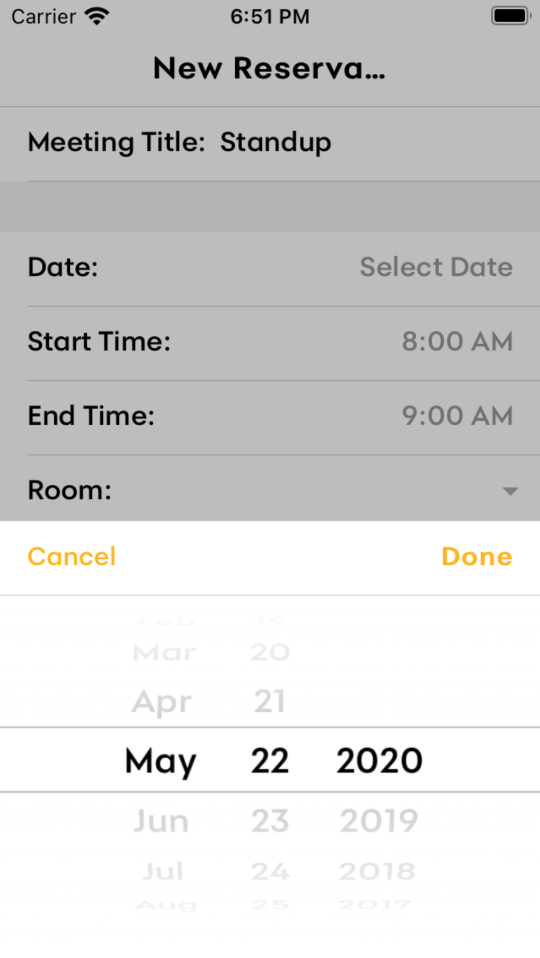
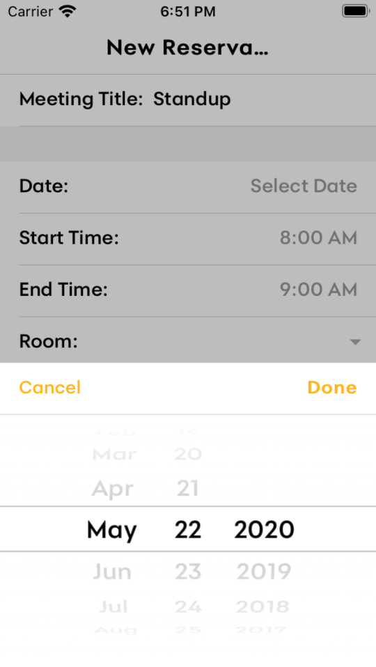
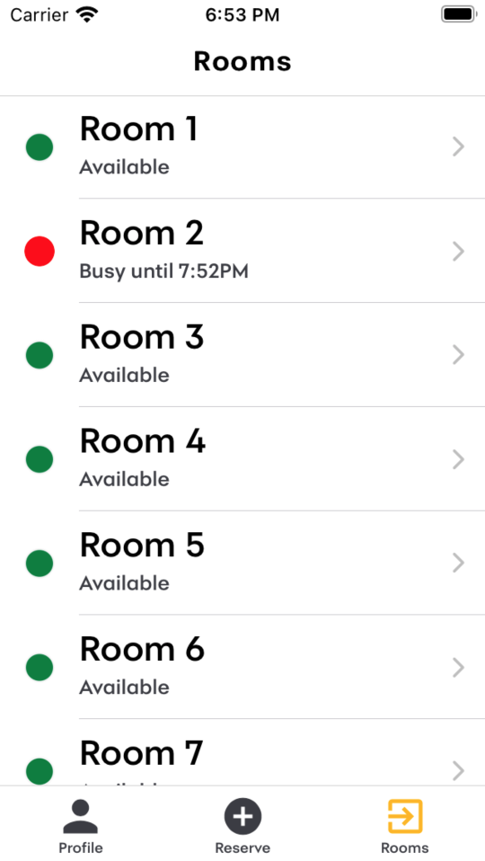
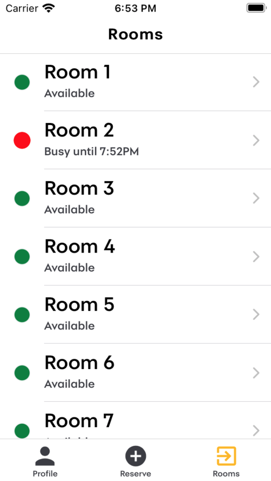

Synchrony
Mobile app design and development, enabling Synchrony employees to manage meeting room reservations.
Overview
For my senior design project, I worked in a team of four to conceptualize, document, design, and develop a mobile application to manage conference room reservations for Synchrony’s Innovation Station. Employees in the Innovation Station needed a way to reserve meeting rooms and see what rooms were available that was simpler and easier to use than their existing system. We worked to design and develop the application throughout the school year, meeting with our advisor and Synchrony sponsors weekly. We focused on design and documentation in the first semester and development in the second.
Research
To better understand the problem space, we interviewed our sponsors at Synchrony, who were engineers in the Innovation Station. We asked them about our potential users and how they currently manage meeting room reservations. We learned what they were struggling with and developed an actionable problem statement based on our insights.
Users
The Innovation Station contains nine meeting rooms of various sizes and is home to multiple collaborative, cross-functional teams that follow agile development methodologies. Employees who would use our application might be engineers, marketers, front-end developers, IT professionals, etc. who would have access to both desktop and mobile devices at almost all times during the workday.
Pain Points
Our interviewees described the following as the primary pain points with the current room reservation system.
It is hard to schedule meetings and keep track of who is scheduled.
It is difficult to see if a room is taken or free.
Meetings often get blocked because they are not synced with the calendar.
Coordination is difficult between teams and within teams leading to scheduling conflicts.
Problem Statement
The employees of the Innovation station need a better way to schedule and manage meetings and view meeting room availability because the existing system causes conflict and frustration, distracting from the actual work that needs to be done.
Ideate
To begin the process of designing a solution, we asked ourselves, “How might we centralize and simplify the room reservation process?” and kept this question in mind as we brainstormed possible ways to solve the problem.
We shared our ideas with our sponsors to get feedback on what they thought would work best in the Synchrony environment. We decided to design a web application that allowed employees to reserve available rooms and see what rooms were booked. We planned to integrate the employees’ Microsoft 365 accounts to solve scheduling conflicts related to meetings not being synced with the calendar. From there, we thought about potential user flows and began sketching what we thought the app should look like.
User Flow Diagram
We individually drew options for user flow diagrams and discussed the pros and cons of each before combining ideas and deciding on a flow we wanted to move forward with. I used LucidChart to clean up and finalize our diagram.
Sketches
We next used sketches to visualize the user flow steps would look like on a screen. I prefer to start designing with sketches to get my ideas onto paper quickly. I like to get feedback, fail fast, and iteratively improve before using design software.
Validate
Reviewing our sketches, we realized that some screens resembled the university library website to reserve study rooms. Instead of reinventing the wheel, we decided to work from the library system and alter it to fit Synchrony’s needs. To validate this new direction and learn more about what needed to be improved from the library website, we surveyed students about their experiences reserving study rooms.
Library Application
Survey
A team member and I created a Google Form to survey 30 students and asked them what they liked and disliked about the system and what they would change to make their lives easier. These students were not our target users, and many of their responses were about other students’ behaviors (ex: not showing up to a room you reserved) however, we were able to extrapolate some of the results to inform our design decisions.
Results
Positive feedback indicated that our idea had potential, and we decided to move forward with modeling our design after the library system would work.
14 people said the system is easy to use, convenient, or efficient.
5 people said that it was clear which rooms were available.
"You can clearly see what spaces are available or not."
We also took note of responses that showed what we could change from the library system to make our own design more effective.
3 people mentioned difficulties when using a mobile device.
4 people mentioned wanting options for filtering the rooms.
“It would be easier if you could just write what time you need a room, and then the available rooms would show up.”
“Sometimes, it gets confusing to differentiate between days.”
Prototype
I used Adobe XD to create a click-through wireframe that combined some of our sketches with the parts of the library system, and decided to use a wireframe kit to save time on designing individual components.
Wireframe
Our sponsors liked that the wireframe was clean and straightforward, with everything on one screen at the same time. While they expressed that the wireframe was a good design for the minimum viable product, the sponsors challenged us to think about adding features and more functionality - to think about spacing and what the design would look like if the requirements were to change. Before leaving for the semester, we discussed different features to add, like filtering rooms, updated the wireframe with Synchrony colors, and sketched where additional features might go. The sponsors were a little hung up on the fact that the wireframe was in blue, so in hindsight, a grayscale wireframe kit might have been better to use.
Development
As we were wrapping up the first semester by completing our wireframe and design plans and writing our 75-page documentation paper, we also decided what our technology stack would be for the application. We made our development decisions based on our individual experiences and comfort with different programming languages.
Technology Stack
The team member with the most experience in developing web and mobile applications suggested using the Ionic Framework because it would be easy to build both web and mobile applications without rewriting much of the code. Additionally, an Ionic application could use plugins easily to connect a database with SQLite.
Database Schema & Relations
Over the break, I got a head start on development by conceptualizing the database schemas and relations we would need for the application. I created an Entity-Relationship Diagram using LucidChart and got to work creating sample tables and figuring out the necessary SQL queries that the app would need to run. The database schemas evolved a little throughout development but mostly adhered to my initial diagram.
Let's Regroup
Between the first and second semesters, we ran into some issues that derailed our process.
Challenge #1: Losing a team member
Unfortunately, one of our team members had to withdraw from the course, leaving us with one less member than expected to develop the application. To make matters worse, the team member lost had the most experience with the technologies we chose and would have been a great knowledge source moving forward. We had to pivot our focus to learning many things from scratch that we probably would accomplish more quickly with an additional team member.
Challenge #2: Inability to serve app in browser
While it was simple, in the code, to integrate the SQLite database with the application using Ionic Native and Cordova plugins, we were unaware that using this method meant we would only be able to test on native devices. We could only view, interact with, and test our application by building the app and using a simulator or an actual iOS or Android device. Because of this, we pivoted our design plans to focus on a mobile application. Thankfully, the sponsors agreed that a mobile application would still work well for the employees at Synchrony.
Bonus Challenge: COVID-19
While the pandemic didn’t become a problem for us until later in the semester, we definitely had to regroup a second time once we were all working on the project from home. Many of our team meetings would consist of coding on the same screen in person, and we lost the ability to work like that. Additionally, as we dealt with changing responsibilities from being at home, we lost time, in general, to work on the project.
Ideate & Prototype - Take 2
At this point, we were designing and developing at the same time. My new sketches were informed by what was possible with the Ionic framework and heavily relied on the built-in UI components. We worked to put these designs into code almost immediately and connect them with the back-end database service.
Sketches
Result
By the end of the second semester, we had a functioning mobile application. The app allowed users to view what rooms were currently available, make a new room reservation, and manage reservations they had created. We were unable to implement some of the desired features due to time constraints, but the MVP was, for the most part, complete.
Final project details and video here.
Main Screens
 

 

Final Thoughts
This project challenged me in ways I hadn’t been before. As a team we learned almost everything we needed to design and build this application on the fly. One thing that would have improved the experience would have been aligning our development and design goals from the beginning - to know what technologies we were going to use, how that would affect the design, and vice versa. While the senior design class structure contributed to this issue, clearer communication and goal setting would have been beneficial.
With additional time and resources, I would have done more research at the beginning to learn about Synchrony employees’ behavior reserving meeting rooms and done testing throughout the design process as well.